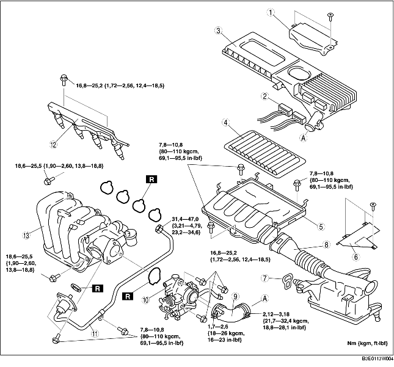

1. Verwijder de accukap. (Zie VERWIJDEREN/PLAATSEN ACCU [ZJ, Z6].)
2. Neem de minkabel van de accu los.
3. Verwijder het onderpaneel.
4. Verwijder de onderdelen in de aangegeven volgorde, zie de tabel.
5. Plaats de onderdelen in omgekeerde volgorde.
6. Voer de "PROCEDURE NA REPARATIE" uit. (Zie PROCEDURE NA REPARATIE [ZJ, Z6, LF].)

.
1. Verwijder de accukap. (Zie VERWIJDEREN/PLAATSEN ACCU [ZJ, Z6].)
2. Neem de minkabel van de accu los.
3. Verwijder het onderpaneel.
4. Voer bij het verwijderen van het luchtfilterdeksel de volgende procedure uit en ga naar stap 6.
5. Plaats het luchtfilter ergens waar het niet in de weg zit.
6. Verwijder de onderdelen in de aangegeven volgorde, zie de tabel.
7. Plaats de onderdelen in omgekeerde volgorde.
8. Voer de "PROCEDURE NA REPARATIE" uit. (Zie PROCEDURE NA REPARATIE [ZJ, Z6, LF].)
.
|
1
|
Luchtfilterelement
|
|
2
|
Luchtfilterhuis
|
|
3
|
Afdekkap luchtinlaat
|
|
4
|
Beugel
|
|
5
|
Luchtinlaat
|
|
6
|
Luchtslang
|
|
7
|
Smoorklephuis
|
|
8
|
EGR-leiding (inlaatspruitstukzijde)
|
|
9
|
Brandstofgalerij
|
|
10
|
Inlaatspruitstuk
|
1. Verwijder de magneetklep dampafvoer. (Zie VERWIJDEREN/PLAATSEN MAGNEETKLEP DAMPAFVOER [ZJ, Z6].)
2. Tap de koelvloeistof af. (Zie KOELVLOEISTOF VERVANGEN.)
1. Neem de koelvloeistofslang los van de koelvloeistofleiding, zoals is aangegeven in de afbeelding.
2. Verwijder de gaskabelsteun van het inlaatspruitstuk.
1. Plaats de bevestigingsbouten en de moer van de EGR-leiding in de aangegeven volgorde.
1. Lijn de merktekens op het smoorklephuis en de luchtslang uit.
1. Controleer of de twee bevestigingsrubbers op de accusteun zijn geplaatst.
2. Plaats de luchtinlaat in de bevestigingsrubbers.
1. Zet het zijpaneel van de luchtgeleider en de luchtinlaat vast met de beugel, zoals in de afbeelding is aangegeven.
1. Steek de PCM-stekker volledig in het luchtfilter en druk op de hendel tot er een klik te horen is.